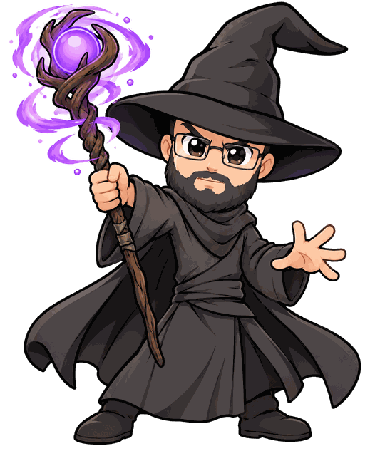
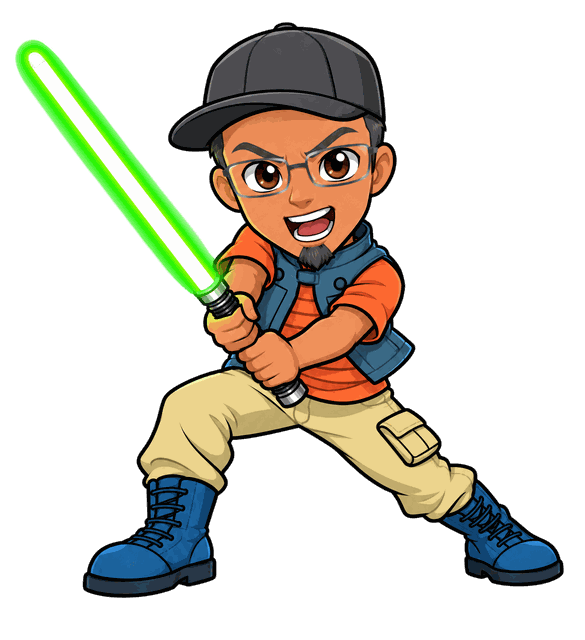
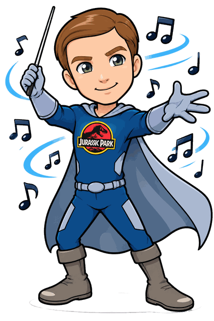
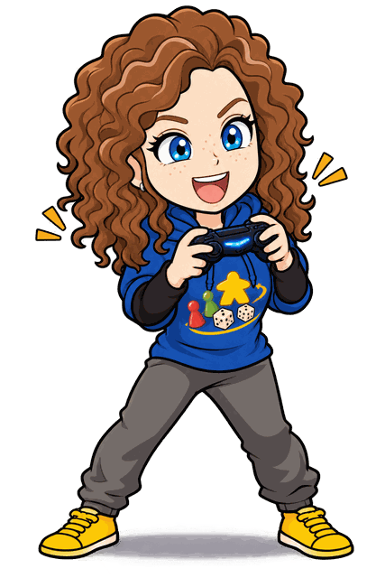
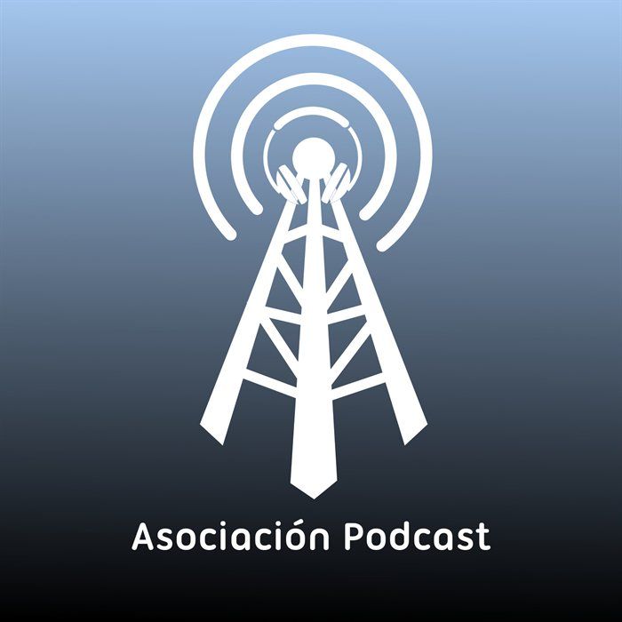

Nuestras secciones
Cada peskito trae su recomendación: una novela, una serie, un cómic, un dorama, un juego de mesa, un videojuego o cualquier cosa que venga full de tutanitos.
Podcast buenrollero de un grupo de amig@s frikis que se lo pasan pipongo hablando de series, cómics, juegos de mesa, doramas, literatura, cine, bandas sonoras, ciencia ficción, fantasía, rol… y lo que surja.
Último episodio:
Peskito y Medio nació en 2019 como una charla entre amig@s y se ha convertido en la excusa perfecta para hablar de todo lo que nos apasiona. Sin prisas, sin guion rígido y con muchas ganas de reírnos.
Cada programa tiene su menú del día: recomendaciones de libros, series, cómics, doramas y juegos; juegos de bandas sonoras; concursos; el club de visionado y la sección del CM. Y si te quedas hasta el final… siempre hay tomas extras.
“Decidnos cómo de pipongo os lo habéis pasado escuchándonos.”
— Peskito y Medio
Cada peskito trae su recomendación: una novela, una serie, un cómic, un dorama, un juego de mesa, un videojuego o cualquier cosa que venga full de tutanitos.
Bandas sonoras, concursazos y muchas risas. Malcolm nunca decepciona.
Comenta los programas en ivoox y ten charlas frikis en Telegram en el canal de @peskiters3, hecho por y para peskiters. Esto se hace entre amig@s.
«Peskito Spice»: la presentación oficial de Peskito y Medio. Dale al play y descubre de qué va esto… y algún que otro momento de gloria.
Dale al play a cualquiera de ellos. Sí, el reproductor de abajo funciona de verdad.
Seis amig@s, tres micros y muchas cosas que contar. Estos son los culpables.
Le gustan las novelas de fantasía y los juegos de mesa, pero sobre todo que le recuerden polacos famosos.
@alecrombie
Devoradora de libros. Se ha leído todos los existentes dos veces; los que no han salido, una. Con Joy forma las Noona Sisters.
@MildrePeski3Creadora de sintonías y maestra del ukelele. Nos trae doramas, recetas coreanas y muchos tutanitos.
@JoyNoonaRaiderFan de Star Wars y lector de cómics. El community manager favorito de la comunidad. Le encantan los especiales escena a escena.
@SeidonMF
Apasionado de Parque Jurásico, las bandas sonoras, los cómics Marvel, el rol y los videojuegos. Pero lo que más le gusta es vernos sufrir con sus concursos.

Jugona todoterreno tanto en mesa como sofá y pc. No hay festival de juegos de mesa que se le resista. Maestra del Juego de Tutanitos.
@PheebsMcM
Finalistas en los Premios de la Asociación Podcast y con hueco en los rankings de Goodpods. No está mal para un grupo de amig@s frikis, ¿eh?
Dos veces entre los cinco finalistas de los premios de la podcastfera en español.

La comunidad de oyentes nos ha colado en el top de podcasts de series.
Y el mejor premio sigue siendo que estés ahí al otro lado, peskiter.
Estés donde estés, hay un Peskito esperándote. Elige tu app, dale al play y únete a la comunidad peskiter.